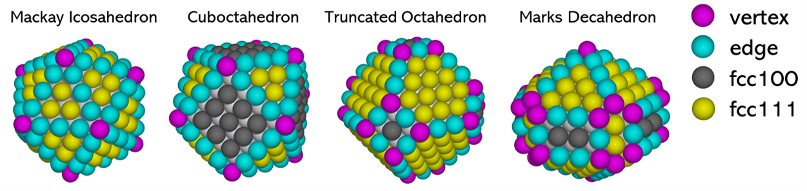
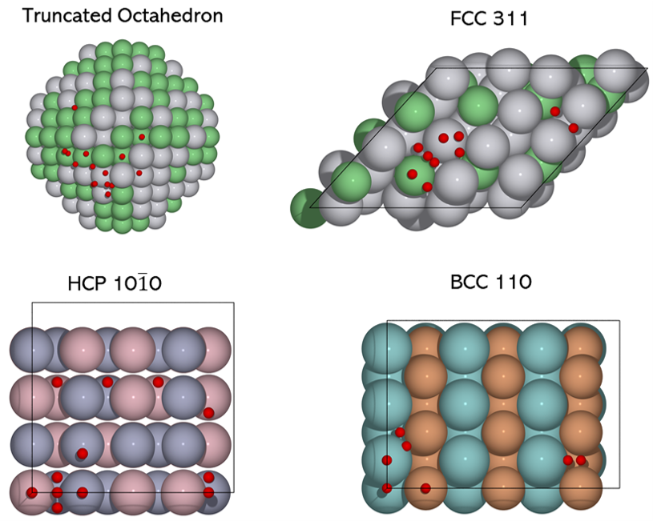
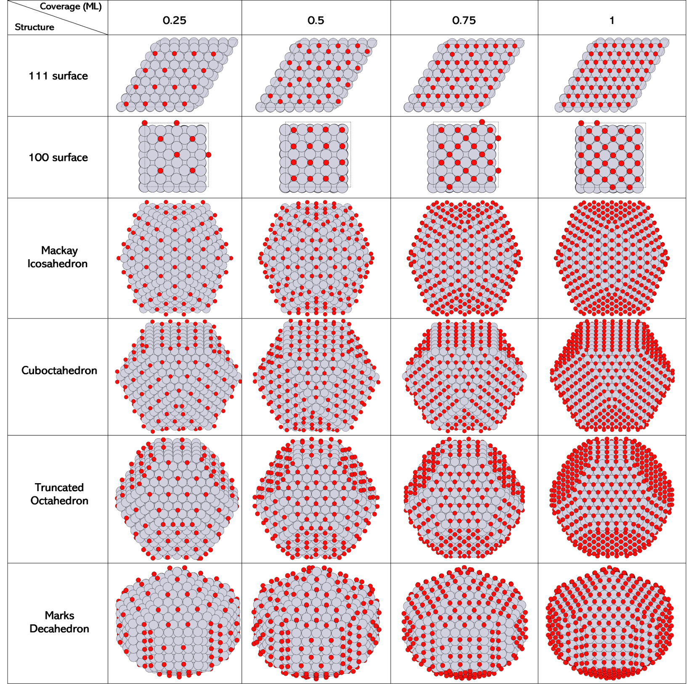

ACAT: Alloy Catalysis Automated Toolkit
Welcome to ACAT documentation!
ACAT is a Python package for atomistic modelling of metal or alloy catalysts used in heterogeneous catalysis. The package is based on automatic identifications of adsorption sites and adsorbate coverages on surface slabs and nanoparticles. Synergizing with ASE, ACAT provides useful tools to build atomistic models and perform global optimization tasks for alloy surfaces and nanoparticles with and without adsorbates. The goal is to automate workflows for the high-throughput screening of alloy catalysts.
ACAT has been developed by Shuang Han at the Section of Atomic Scale Materials Modelling, Department of Energy Conversion and Storage, Technical University of Denmark (DTU) in Lyngby, Denmark. The development is hosted on gitlab.
Contents
- Installation
- Base modules
- Building things
- Evolutionary algorithms
- Other utilities
neighbor_shell_list()get_adj_matrix()get_mic()cart_to_frac()hash_composition()get_close_atoms()atoms_too_close()atoms_too_close_after_addition()get_angle_between()get_rejection_between()get_rotation_matrix()get_rodrigues_rotation_matrix()get_total_masses()string_fragmentation()orthogonal_transform()ratios_from_atoms()numbers_from_ratios()dag_from_ucg()sort_atoms_by_ref_atoms()draw_graph()
- Notes
Using ACAT
If you find ACAT useful in your research, please cite
[1] S. Han, S. Lysgaard, T. Vegge & H. A. Hansen (submitted). [This is a preprint](https://chemrxiv.org/engage/chemrxiv/article-details/62c8116b3be5f17b9a120c98)
If you use ACAT’s modules related to symmetric nanoalloy, please also cite:
[2] S. Han, G. Barcaro, A. Fortunelli et al. Unfolding the structural stability of nanoalloys via symmetry-constrained genetic algorithm and neural network potential. npj Comput. Mater. 8, 121 (2022). https://doi.org/10.1038/s41524-022-00807-6
Gallery
Various shapes and facets of nanoparticles identified by ACAT:
All symmetry-inequivalent adsorptions sites (in red) identified by ACAT on truncated octahedron (top left), fcc(311) surface (top right), hcp(10-10) surface (bottom left) and bcc(110) surface (bottom right):
{kind=link}
Well-defined ordered adsorbate overlayer patterns at various coverages for various surfaces and nanoparticles generated by ACAT:
Acknowledgement
The ACAT code is developed as part of the project BIKE: BImetallic catalysts Knowledge-based development for Energy applications. The BIKE project has received funding from the European Union’s Horizon 2020 Research and Innovation programme under the Marie Skłodowska-Curie Action – International Training Network (MSCA-ITN), grant agreement 813748